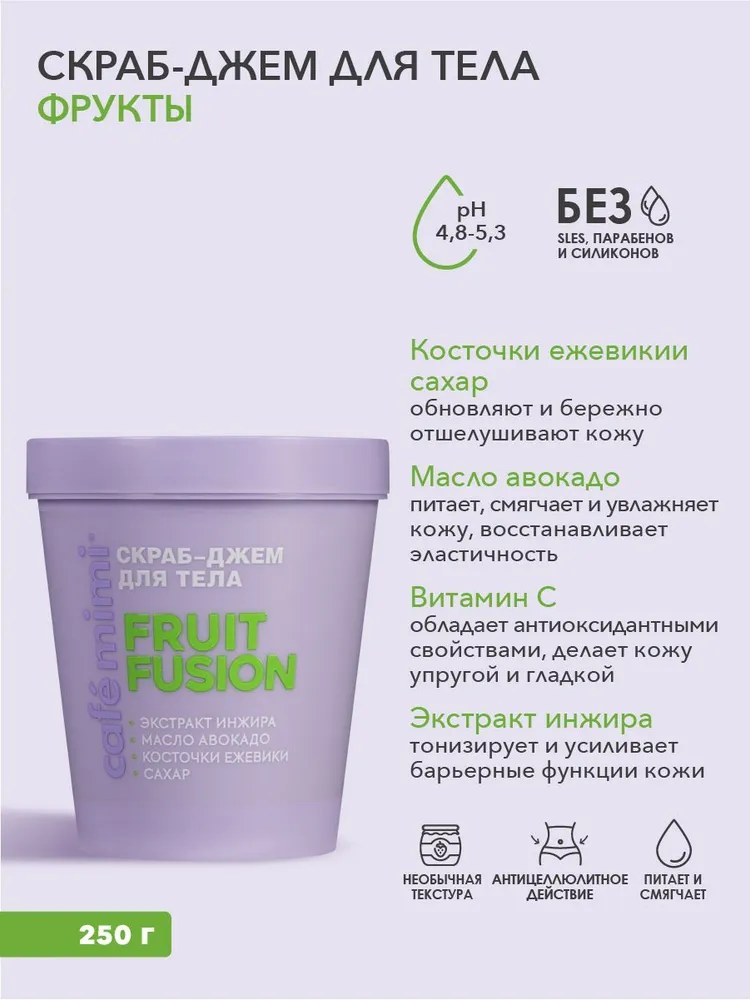

FRUIT FUSION
Сахарный скраб на масляно-глицериновой основе: помогает убрать шероховатость и оставляет кожу более гладкой и мягкой.
Что интересного в составе
Сахар отвечает за мягкое механическое отшелушивание, а глицерин помогает удерживать влагу. Миндальное и авокадовое масла смягчают кожу; ягодные порошки добавляют скрабу текстуру. Sodium Ascorbyl Phosphate — стабильная производная витамина C, а витамин E — антиоксидантный компонент.
- Сахар
- Глицерин
- Миндальное масло
- Масло авокадо
- Ягодные порошки
- Витамины C и E
Как использовать
Нанеси на влажную кожу, мягко помассируй и смой. Не три слишком активно; не используй на раздражённой или повреждённой коже.
Посмотреть полный состав
Glycerin, Sucrose, Aqua, Prunus Amygdalus Dulcis Oil, Persea Gratissima Oil, Ficus Carica Fruit Extract, Rubus Fruticosus Seed Powder, Ribes Nigrum Fruit Powder, Rubus Idaeus Seed Powder, Sodium Ascorbyl Phosphate, Acrylates/C10-30 Alkyl Acrylate Crosspolymer, Tocopheryl Acetate, Xanthan Gum, Sodium Hydroxide, Benzyl Alcohol, Parfum, CI 17200, CI 42090.